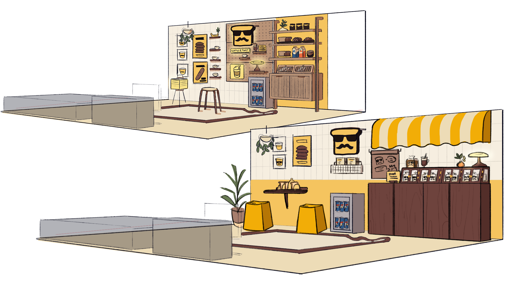
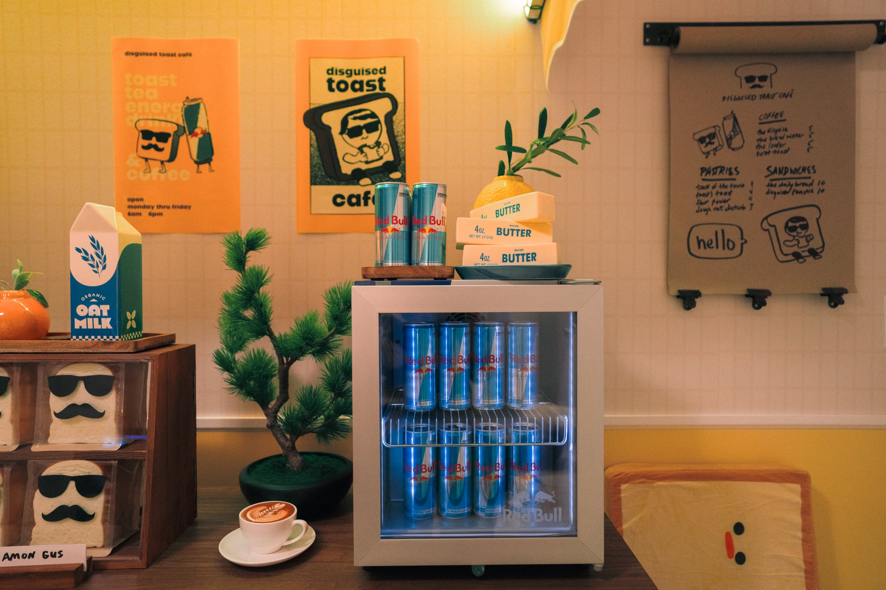
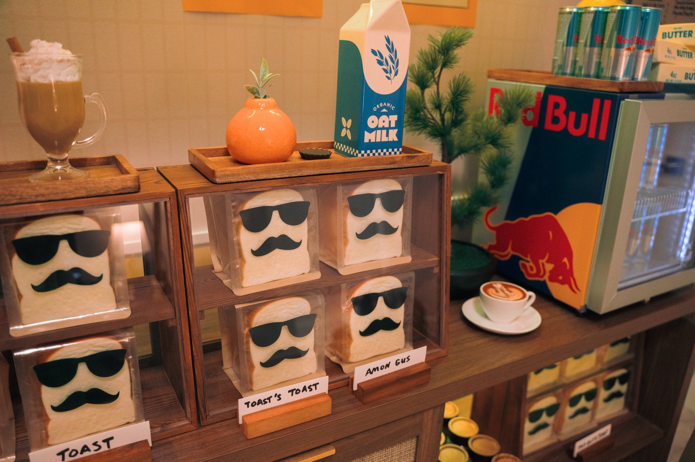
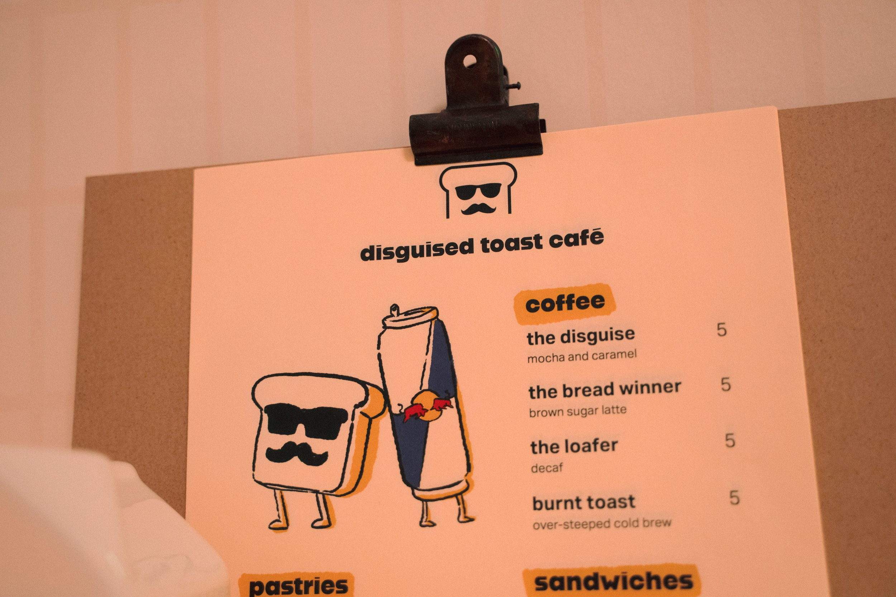
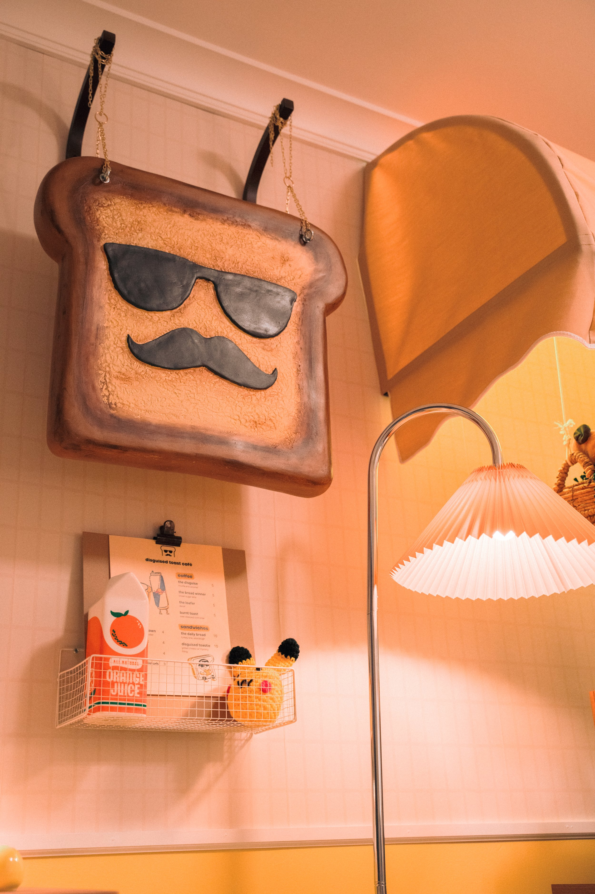
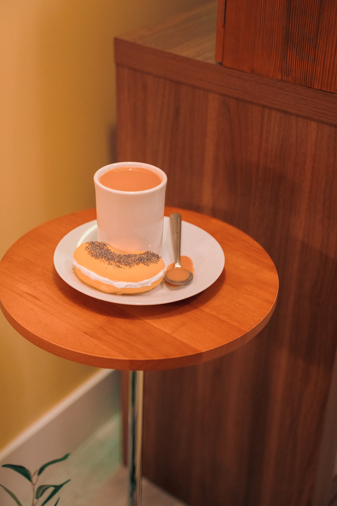
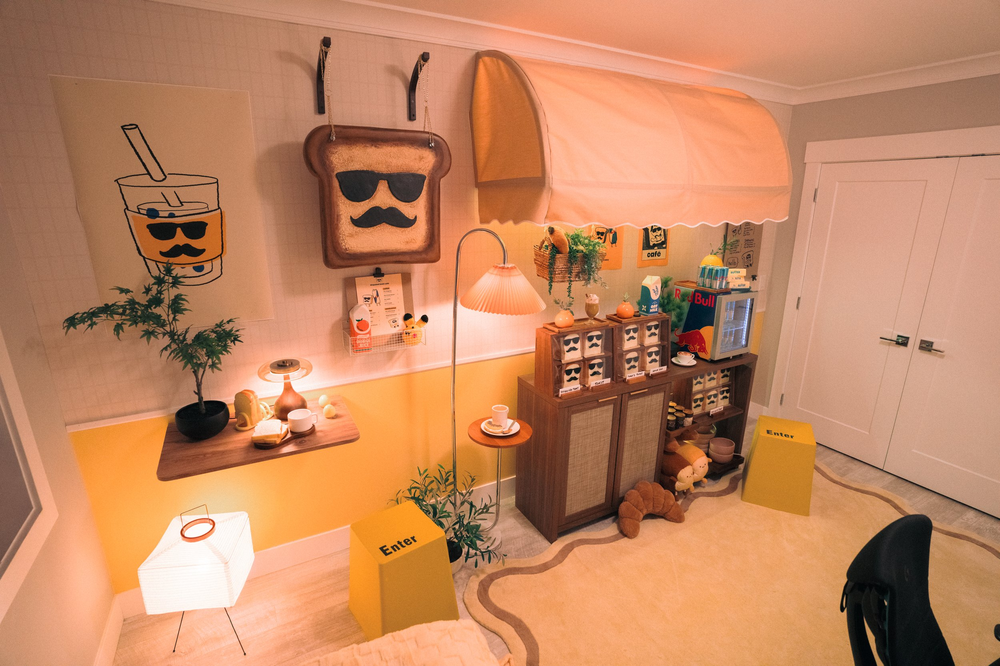
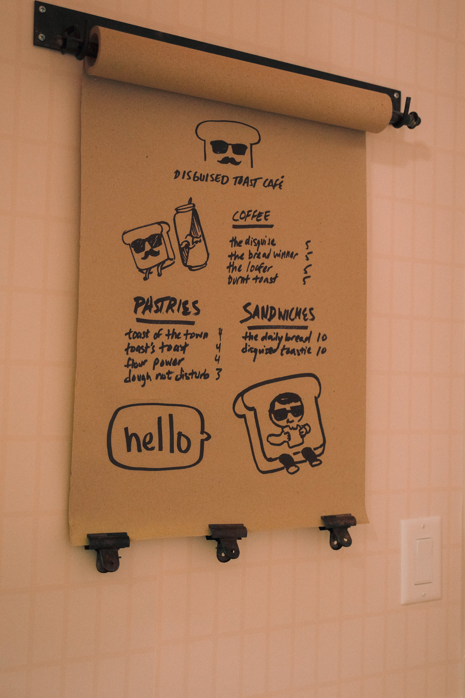
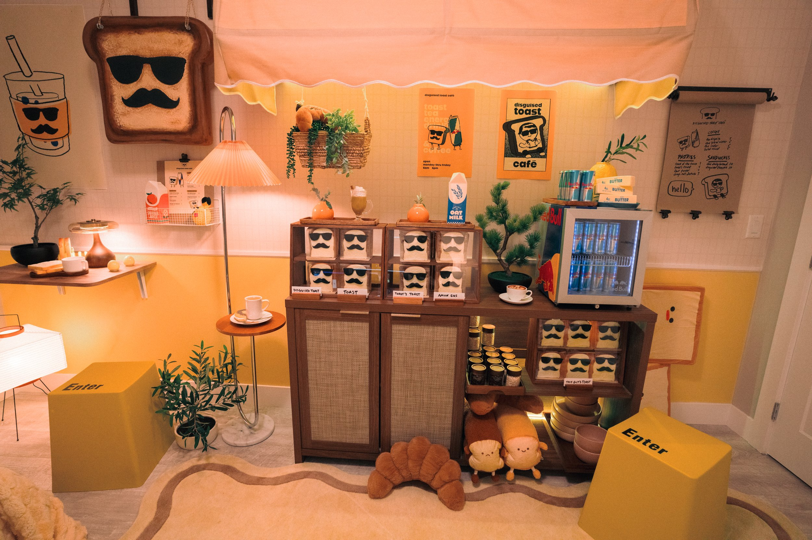
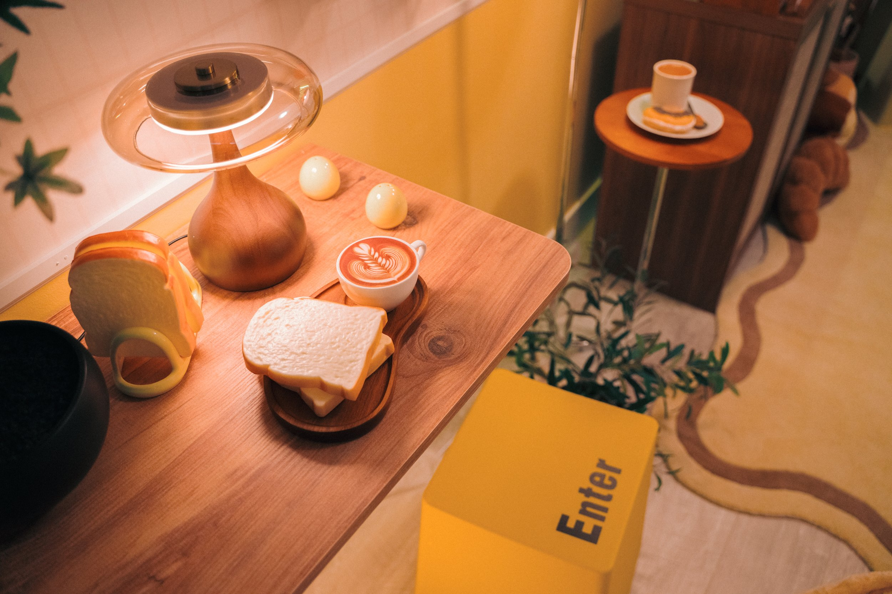

Disguised Toast Cafe Stream Room
Client: Red Bull
Year: 2026
Role: Set Design | Art Direction | Styling | Set Fabrication
We handled set design & styling for Red Bull, reimagining the space of their athlete Disguised Toast into a fully transformed, bakery-inspired environment. The concept draws directly from his personal branding, turning the room into a stylized storefront complete with toast display cases, custom shop signage, and playful mock menus and advertisements. The design balances this strong visual concept with a sense of comfort and cozy that echoes the familiarity of a favorite café, all wrapped in a buttery yellow and toasty brown color palette.
Proofed to perfection.
Practical Layout
We approached the layout with practicality at the forefront. Because the space still needed to operate as a bedroom (with the bed along one side and full access to the closet), we were intentional about keeping the footprint minimal and circulation clear. Our solution focused on building vertically, maximizing the wall itself rather than extending outward into the room. We incorporated a combination of hung elements like a folding table, awning, sign, shelving, paper roll, posters and more!
Red Bull Branding
We made sure Red Bull’s branding felt seamlessly integrated with a pop of signature blue as an accent and menu sketches spread throughout. The iconic Red Bull fridge was strategically placed and styled to fit into the checkout counter layout. Thoughtful lighting above and around provided additional highlights to the client branding.










